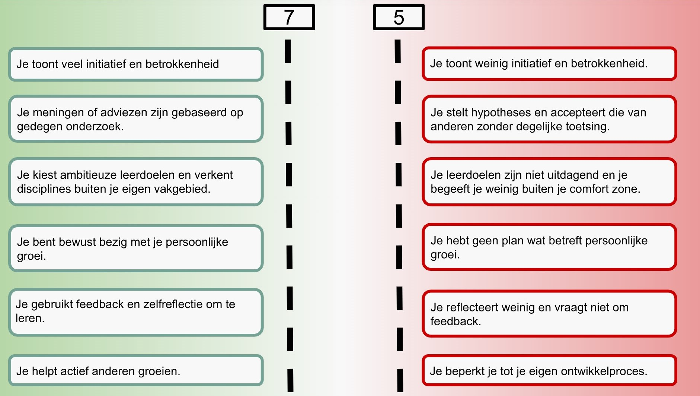

Smart Me


31-8-2022 Kennismaking
Tijdens de kennis making viel het mij op dat het anders ging dan ik gewend bent vanuit de opleiding. Er werd gebruikt van meer de fysieke manier dan alleen in lokaal zitten en luisteren. Het doorgeven van namen om elkaars namen te onthouden en de afsluiter waren dingen die ik nog nooit heb gedaan tijdens introducties. Tijdens de introductie moesten we kijken wat we uit de minor wouden halen. Voor mij is het de bedoeling om meer de technische aspecten te leren. Zoals het programmeren in html, automatiseren, 3d printen en andere technieken. Aangezien ik zelf een logistieke achtergrond heb ben ik van plan om te helpen bij anderen als het gaat over bedrijfskundige methoden en distributie. Zo ben ik bekend met implementatieprocessen, analyseren van data en gegevens en het uitwerken van kosten/ baten analyses.7-9-2022 Kookworkshop
Tijdens de kookworkshop is iedereen in 3 groepen verdeeld. Ikzelf kwam in het groepje voor het voorgerecht terecht, hierdoor was ons groepje de eerste die iets moest opleveren. In het begin duurde het heel lang voordat er progessie in zat. Zo gingen we eerst afstemmen per groepje wat we wouden of konden maken. Pas daarna hebben we overlegd met de andere groepen wat ze gingen maken.
Bij ons werd er al meteen verwantwoording genomen door degene die het meest bekend was met koken, hierdoor kreeg hij meer de verwantwoording en liet de rest zich maar wachten op instructies. Dit was voor mij ook het geval, hierdoor was ons groepje niet zo georganiseerd. Voor mijzelf was het wel duidelijk wat de andere groepen gingen maken, maar omdat de groep van het dessert al snel was begonnen met de eigen taken zonder duidelijk te overleggen was deze minder op de hoogte.
Tijdens de workshop heb ik geleerd dat als je samen naar één doel werkt je hierover goede afspraken moet maken wie er waar mee bezig is en wanneer dit wordt opgeleverd. Bij ons was het meer elk groepje voor zich waardoor er geen duidelijk moment was wanneer het gerecht af moest. Daarnaast was er halverwege een verandering tijdens de workshop, er kwam namelijk een doos die bedoeld was voor een extra gerecht. Alleen nam niemand hiervoor de verantwoording waardoor de doos ongeroerd bleef liggen terwijl dit wel de opdracht was. Wanneer zoiets gebeurt in een project moet er wel goed worden ingesprongen om de opdrachtgever tevreden te houden.


15-9-2022 Smart Journey: Een growth mindset hebben.
De sessie van 15-9 ging over persoonlijke ontwikkeling. Het hebben van een growth mindset is het leren en toegeven van fouten, het uitproberen van nieuwe strategien of het zoeken van feedback en dit gebruiken om te leren. Ee n bedrijf kan dit ook inzetten om meer te kijken naar wat een medewerker heeft geleerd dan of het doel is bereikt, maar ook het teamgedrag belonen en niet de individu.Daarnaast hebben we het gehad over persoonlijk groei. Het feit dat je iets moet zoeken dat bij je skills hoort vond ik er interessant. Je moet niet iets kiezen dat voor te veel stress veroorzaakt maar ook niet iets wat te weinig uitdaging heeft wat voor verveling zorgt. Dit was iets wat mij nog nooit was bijgebracht. Persoonlijke groei gaat ook over het zien van wat je nu kan, wat je wil doen met wat je al kan en dit doel realiseren.
Als ik later zou stoppen met persoonlijke groei leidt dat tot stilstand. Hetzelfde geldt voor het zien van de obstakels op de pad, hierop moet er juist op het doel worden gefocust en niet op de obstakels. Persoonlijke groei is niet alleen goed voor werk, zoals meer kennis voor werk kansen en effectiever worden maar ook voor het prive leven. Persnoonlijke groei in het prive leven zorgt voor meer energie en plezier in het leven.
Tijdens de lessen hebben wij de volgende gegevens ingevuld over onze hero, onze wicked questions en over de eerste indruk die er van de persoon is.
Presentatie Luc en Jos over veranderen.
Op 23-09 was de presentatie over het veranderen van jezelf op werk zodat je in goede gezondheid aan het werk kan. Tijdens deze presentatie is aan bod gekomen om te kijken wat de kernvaardigheden van banen nu echt zijn. Zoals het feit dat voor een stewardess en verzorgende verpleegtehuis dezelfde vaardigheden nodig zijn en deze ook van pas kunnen zijn in andere sectoren.
Wat ik apart vond is dat 5 procent zich niet goed opgeleid vond en 30 procent zichzelf te opgeleid vond. Dit is iets wat ik niet had verwacht omdat ik op dit moment blijf leren en mezelf bij de huidige werkgever zie als iemand die nog niet genoeg ervaring en kennis heeft.
Daarnaast ging het over toekomst en dat hiervoor verschillende factoren van toepassing zijn, al deze factoren beslissen uiteindelijk de toekomst. Zoals de gender discriminatie bij defensie voor het inzet van vrouwen bij de onderzeeboten. Als deze discriminatie niet was aangepakt zou de toekomst voor de onderzeeboten slechter zijn, daarnaast spelen nog anderen factoren. Zoals de techniek die gebruikt wordt zodat er minder mensen nodig zijn om een onderzeeboot te bemannen.
Er is aan de hand van een ziekenhuis casus getoond wat er gebeurt met taken van een medewerker gebeurt op het moment dat er technologische ontwikkeling plaats vinden. Ik vond het hierbij heel interresant dat er hierdoor twee verschillende kanten ontstaan: het kwalitatief betere resultaten maar meer simpel werk dat minder werknemers trekt. Hierdoor zit er vaak geen autonomie meer in omdat alles al van te voren is bepaald.
Enzyre presentatie.
Uit de presentatie van Enzyre heb ik kunnen halen hoe die een product hebben opgezet en tot de markt willen komen. Enzyre wil hemofilie producten maken, tijdens de uitleg van het product en wat hemofilie is. Tijdens deze uitleg wet het mij weer eens duidelijk hoe mijn prikpobie werkt ☹
Mark heeft uitgelegd dat ze in het team gebruik maken van een patient die eigenlijk wordt gebruikt als proefpersoon. Deze wordt actief meegenomen in het design proces. Zoals het aangegeven dat er geliever gebruik wordt gemaatk van een zon compact mogelijk item, omdat anders de spullen die dagelijk worden meegenomen te zwaar worden.

Workshop Oner Acadamy.
In de workshop ging het over je brein en het gebruik maken van deze voor je leven. Iedereen heeft 5 dingen die nodig zijn om gelukkig te zijn: gezondheid, relaties, financiële basis, maar ook 5 verschillende angsten die precies het tegenovergestelde zijn van die van geluk: angst om dood te gaan, financieel in zwaar weer zijn. Hoe iedereen hier over denkt is verschillend maar iedereen heeft deze angsten. Daarnaast werd er verteld dat je rapport nodig hebt om met iemand een connectie te maken. Wanneer je een connectie hebt heb je eerder kans op slagen wanneer je die persoon moet overtuigen. Maar ook dat je goed je brein moet gebruiken en deze af en toe tegen moet werken omdat deze vaak negatief werkt. Zo onthoud je vaker negatieve zaken dan de positievere. Wanneer je jezelf deze negatieve gedachtes niet laat tegen zitten zou ik meer kunnen bereiken in mijn leven. Ik ben namelijk een echter doem denker en haal altijd uit alles iets negatiefs, zo zal ik bij iets nieuws of iets waar ik ooit iets negatiefs heb meegemaakt het daarna niet meer zo snel willen doen.
Competenties & Wat heb ik geleerd
Competentie: Bewust bezig met persoonlijke groei.Door de les van Luc en Jos heb ik meer gekeken naar wat er te halen valt uit mijzelf. Zo heb ik altijd het gevoel gehad dat ik alleen logistiek heb geleerd dus ik zal wel alleen logistieke functies kunnen betreden. Door hun heb ik gekeken naar wat ik kan en op welke grondgebieden dit nog meer van toepassing is. Zo zou ik verkeersleider of op sales functies kunnen zitten zonder dat dit concreet mijn opleiding is geweest. Hierdoor zal ik in het vervolg meer kijken naar de kerntaken van een baan dan naar de opleidingskennis.
Ik ben altijd al meer fan geweest van het beoordelen op basis van inzet dan op cijfer, maar door de les over growth mindset wou ik dit nog meer gebruiken. Zo ben ik nu op werk begonnen om dit toetepassen, als voorbleed heb ik na een presentatie van een nieuw systeem die in december plaatsvond meteen aangegeven dat mensen gerust vragen mogen stellen op elk moment hoe klein dan ook. Ik kan ze dan nog een keer uitleg geven zodat ze er van leren. Maar ook als ik zie dat het fout gaat dit dan doornemen zodat ze ervan kunnen leren. Ik wil dit zeker gebruiken in mijn verdere carriere zodat het team en ik zo verder ontwikkelen.
Competentie: Feedback en zelfreflectie om te leren.
Ik heb tijdens deze lessen veel geleerd over mijn persoonlijkheid, lichaam en hoe ik reflecteer over mijn eigen leven. Zo heb ik na de workshop van Ilke geprobeert te minder met negatief denken over situaties puur en alleen omdat het één keer eerder is fout gegaan. Ik weet zelf echt wel dat fouten maken menselijk is maar ben toch altijd bang om als dom of irritant te worden beschouwd. Dit komt omdat ik vaak moeite heb met het juist overbrengen van wat ik in mijn hoofd heb, zo haal ik dingen door elkaar of ga ik te snel praten.
Ik heb daarom geprobeerd om minder na te denken over de negatieve situaties en meer op de positieve situaties te focussen. Zoals de momenten dat het wel goed ging of de momenten dat het minder goed ging maar wel goed herpakt had. Vaak kwam het door elkaar halen van woorden/zinnen door het feit dat ik een gesprek dan al 4 keer in mijn hoofd had doorgenomen zodat ik het idee had dat ik het dan wel goed zou hebben. Door Ilke ben ik meer gaan kijken naar de goede momenten en probeer ik mij minder te stressen voordat ik een sociale situatie in ga.

Competentie: Het actief helpen groeien van anderen.
Tijdens het project gaf Lars aan dat hij minder snel het woord nam tijdens ontmoetingen en presentaties. Zelf deed ik dit ook niet waardoor Rick ons de kans heeft gegeven om minder vaak het woord te nemen waardoor ik en Lars het gesprek konden voeren. Wanneer ik merkte dat ik te lang aan het woord was heb ik geprobeerd een stilte te laten vallen zodat Lars iets toe kon voegen aan het gesprek. Hierdoor hebben wij allemaal elkaar geholpen om uit de comfort zone te stappen.